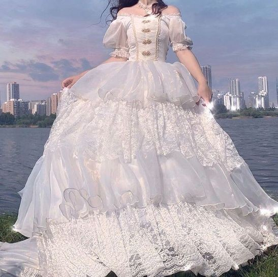

Белоснежное платье
Описание
Белоснежное платье для бала.

{kind=link}
Характеристики
- Материал: шелк
- Вес: 1560 г
- Произведено во Франции
- Материал подъюбника: тюль
- Длина товара: 130 см
| Размер | 40 | 42 | 44 | 46 |
| Рост | 160 | 165 | 170 | 175 |
Подробное описание
Белоснежное пышное платье для бала представляет собой истинное произведение искусства, которое неизбежно привлекает внимание и вызывает восхищение. Это платье обладает роскошной и изысканной эстетикой, ярко отражающей великолепие и элегантность. Юбка платья, выполненная из пышных слоев тюля или шелка, создает эффект притягательного объема и движения. Белоснежный цвет позволяет выделяться на фоне и подчеркивает чистоту и нежность образа. Длина платья может быть различной, от покрывающей полушерсти до роскошного почти полноразмерного. Декоративные элементы на платье, такие как вышивка, кристаллы или жемчуг, могут быть использованы для придания дополнительного шика и блеска. Рукава платья могут быть длинными и пышными или краткими и прозрачными, обрамляя руки и подчеркивая их элегантность.